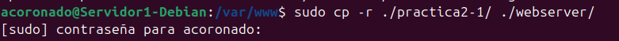
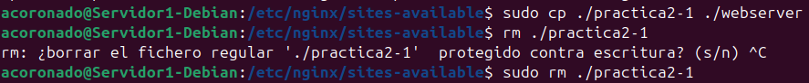
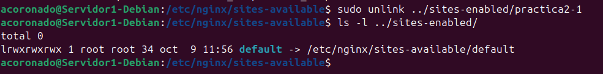
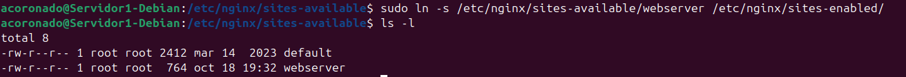
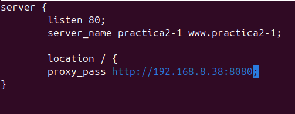
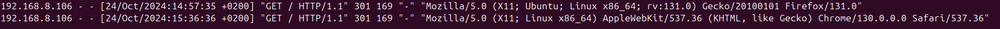
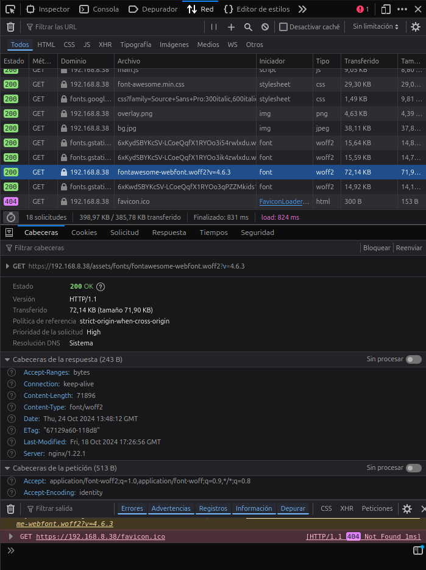
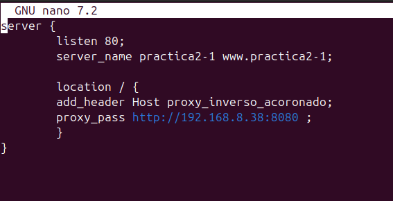
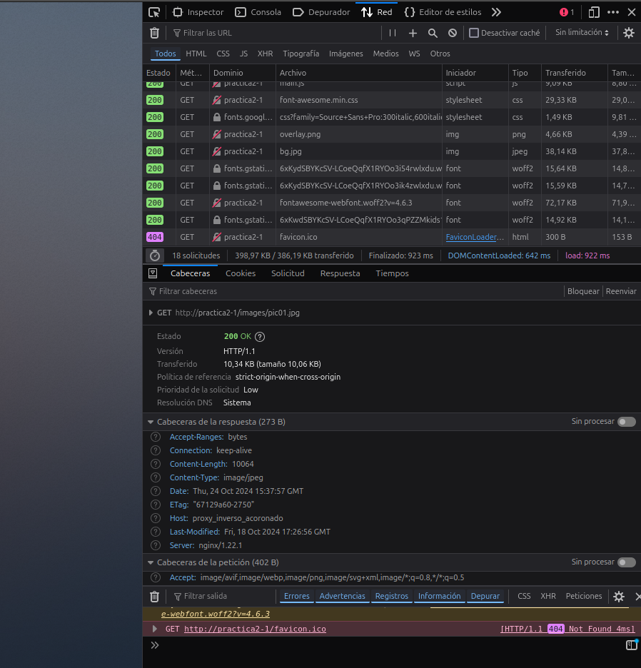

Práctica 2.3 – Proxy inverso con Nginx
Requisitos antes de comenzar la práctica
Atención
- No iniciar esta practica hasta haber completado la práctica2.1
Introducción
¿Qué es un servidor proxy?
Un servidor proxy o proxy web, es un servidor que se encuentra frente a un grupo de máquinas cliente. Cuando esas máquinas realizan solicitudes a sitios y servicios en Internet, el servidor proxy intercepta esas solicitudes y luego se comunica con los servidores web en nombre de esos clientes, como un intermediario.
Hay algunas razones por las que uno podría querer usar un proxy de reenvío:
- Para evitar restricciones de navegación estatales o institucionales
- Para bloquear el acceso a cierto contenido
- Para proteger su identidad en línea
¿En qué se diferencia un proxy inverso?
Estaríamos hablando del caso opuesto al anterior.
Un proxy inverso es un servidor que se encuentra frente a uno o más servidores web, interceptando las solicitudes de los clientes. Esto es diferente de un proxy de reenvío, donde el proxy se encuentra frente a los clientes. Con un proxy inverso, cuando los clientes envían solicitudes al servidor de un sitio web, esas solicitudes son interceptadas en la frontera de la red por el servidor proxy inverso. El servidor proxy inverso enviará solicitudes y recibirá respuestas del servidor del sitio web.
A continuación se describen algunos de los beneficios de un proxy inverso:
- Balanceo de carga
- Protección contra ataques:
- Almacenamiento en caché
- Cifrado SSL
Tarea
Configuraciones
Nginx servidor web
Para usar un proxy inverso necesitaremos tener 2 máquinas virtuales, 1 donde esté alojado el servidor web y otra que haga de proxy. Para agilizar este proceso clonaremos la máquina que ya teníamos.
Por lo tanto:
- Uno servirá las páginas web que ya hemos configurado.
- El nuevo servidor clon Debian con Nginx configurado como proxy inverso
- Realizaremos las peticiones HTTP desde el navegador web de nuestra máquina física/anfitrión hacia el proxy clonado, que nos redirigirá al servidor web original.
Para que todo quede más diferenciado y os quede más claro que la petición está pasando por el proxy inverso y llega al servidor web destino, vamos a hacer que cada uno de los servidores escuche las peticiones en un puerto distinto.
-
En primer lugar, deberemos cambiar el nombre de nuestra web por el de
webserver, eso implica:- Cambiar el nombre en
/var/www/

- Cambiar el nombre del archivo de configuración de sitios disponibles par Nginx

- Eliminar el link simbólico antiguo con el comando unlink
nombre_del_linkdentro de la carpeta sites-enabled y crear el nuevo para el nuevo nombre.


- Cambiar el nombre en
-
En el archivo de configuración del sitio web, en lugar de hacer que el servidor escuche en el puerto 80, cambiadlo al 8080.
- Reiniciar Nginx
Nginx proxy inverso
Ahora cuando intentemos acceder a http://practica2-1 (o el nombre de tu dominio), en realidad accederemos al servidor proxy,
el cual nos redigira a, http://web-server, el servidor que hemos configurado anteriormente con ese nombre en el puerto 8080.
Para esto:
- Crearemos un archivo de configuración en sites-available con el nombre
practica2-1 - Este archivo tendrá la siguiente forma:
- En Listen deberéis poner el puerto que escuchara el servidor.
- En server name el nombre de nuestro sitio web o dominio.
- En proxy_pass indicar a dónde se van a redirigir las peticiones, esto es, al servidor web. Por tanto, debéis poner la IP y número de puerto adecuados de vuestro sitio web configurado en el apartado anterior.
Quedando algo así:

Comprobaciones
Tras estos cambios si hemos conseguido hacerlos sin problemas, deberíamos ser capaces de acceder a nuestro servidor sin problemas
- Deberemos comprar los access.log de cada servidor web.

Y como podemos ver en la cabecera, muestra un código 301 que es redireccionamiento y nos manda hacia el servidor donde está la página web.
- Comprobaremos además la petición y respuesta con las herramientas de desarrollador de Firefox.

En dónde se puede ver la respuesta de la petición GET HTTP (200 OK).
Añadiendo cabeceras:
Además de haber mirado los logs, vamos a demostrar aún de forma más clara que la petición está pasando por el proxy inverso y que está llegando al servidor web y que vuelve por el mismo camino.
Así pues, vamos a configurar tanto el proxy inverso como el servidor web para que añadan cada uno la cabecera “Host” que también vimos en teoría.
Para añadir cabeceras, en el archivo de configuración del sitio web debemos añadir dentro del bloque location / { … } debemos añadir la directiva:
-
Añadiremos primero esta cabecera únicamente en el archivo de configuración del servidor proxy.

-
Reiniciamos nginx.
-
Comprobamos que podemos acceder sin problema.
-
Con las herramientas de desarrollador comprobamos que la petición ha pasado por el proxy inverso que ha añadido la cabecera en la respuesta:

-
Hacemos lo mismo con el servidor web. Esta vez el Nombre_del_host será servidor_web_acoronado.
Si hemos configurado todo bien, al examinar las peticiones podremos ver las dos cabeceras, la del servidor proxy y la del servidor web.
Tras esto, ya tendremos nuestro servidor proxy creado y funcionando.